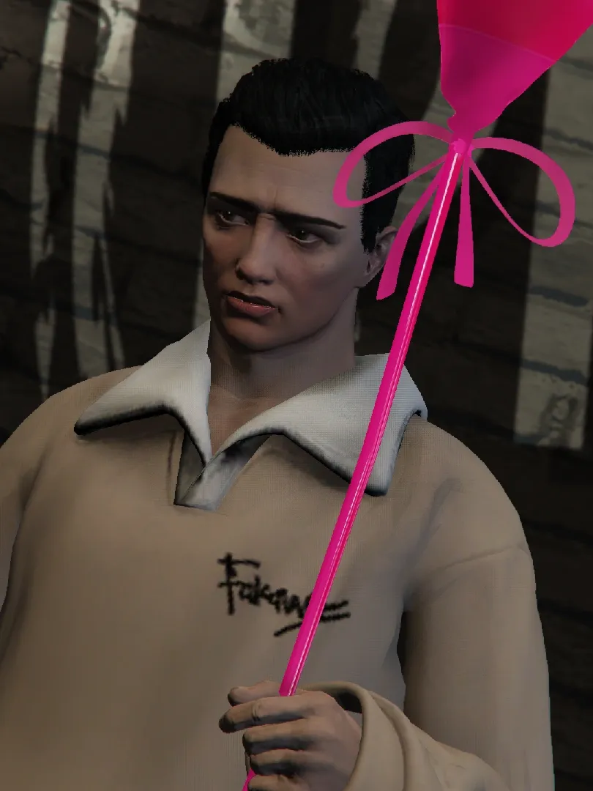
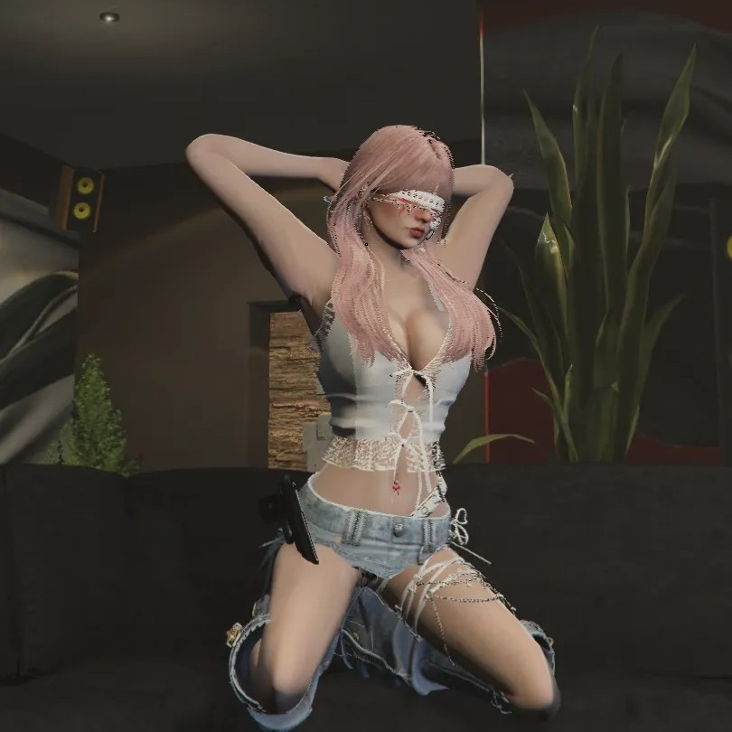
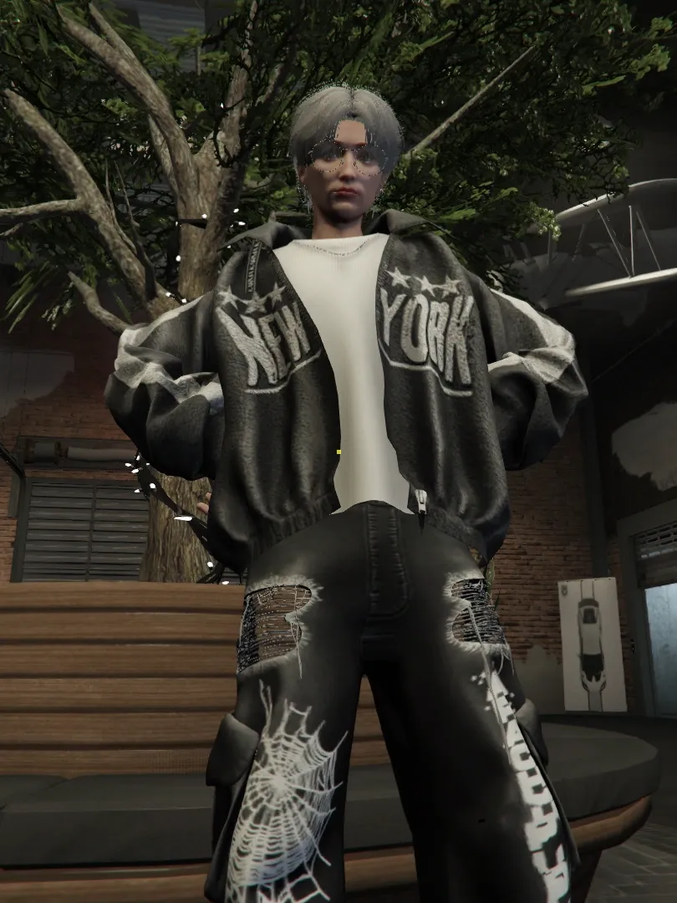
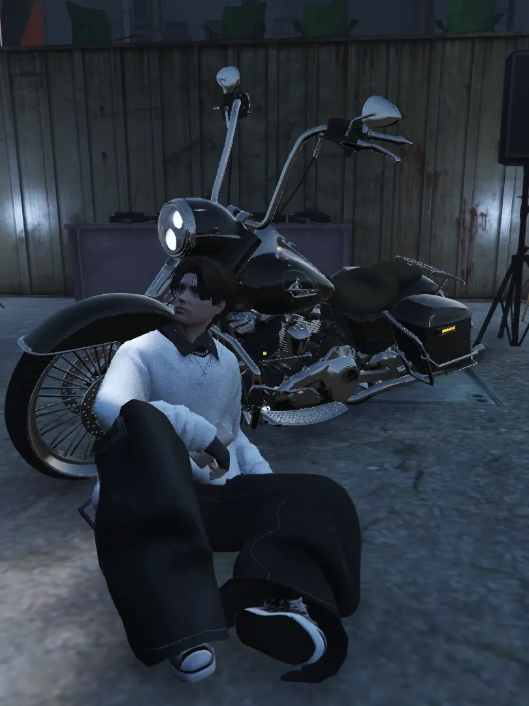
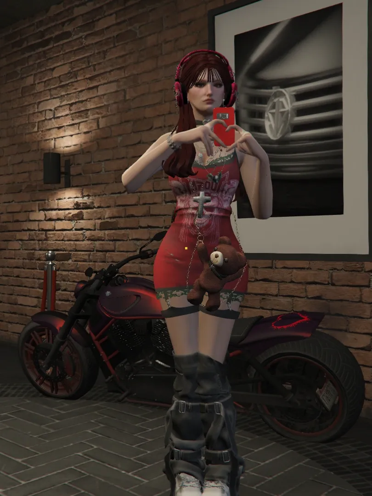
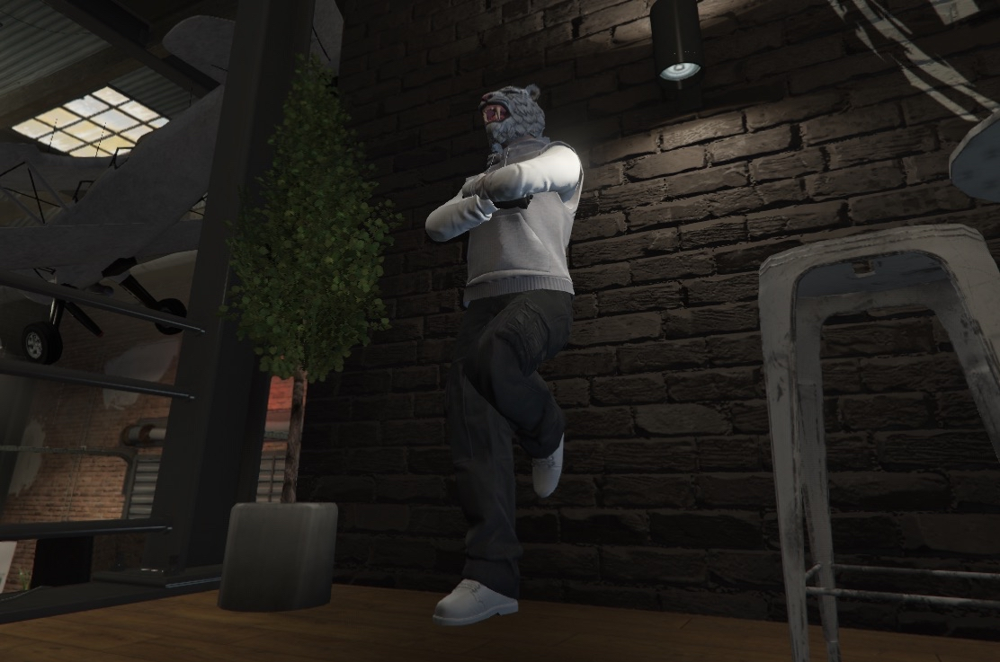
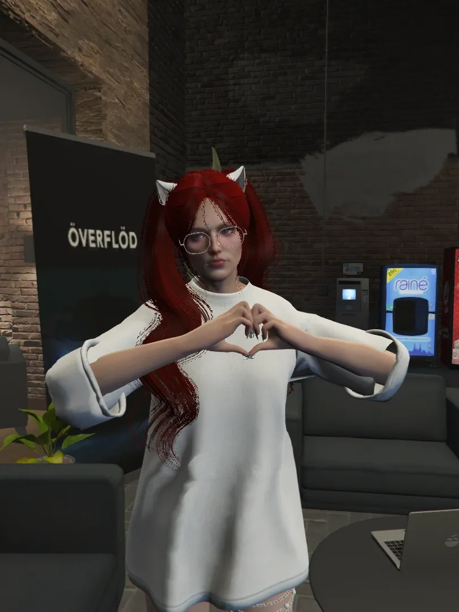

にしうら
- 得意なこと：スノボー
- 好きな車：FD改
現中山のオーナー！
栄養素の五角形がまんべんなく振り分けられたコーンフレークみたいなひと！！
最後までていねいに心を込めて作業をするメカニック。

Saa Saa（さーさん）
- 好きな食べ物：????
- 好きな車：????
中山モータースの起業した人！
気づけばとりこになってる人も多数存在...

はちきしん（ぱちき、はちきのすけ）
- 好きな物：友達
- 得意なこと：歌
- 好きな車：GT-R 34
声もリアクションも存在感もとにかく大きい。
登場するだけで笑いと活気が生まれる。
最もキャリアが長く豊富な経験と確かな信頼をもつメカニック。
歌うビジュ担当。
粉末ぱうだぁ（ぱうだぁ）
- 好きな物：お酒
- 好きな車：300SL
明るい笑い声でその場の空気を一瞬で明るくする。その穏やかさと温かさでみんなの心を癒す存在。
酒、下ネタ、スロット好き、さらに尽くし癖まである。しかしそれすらも豪快に笑い飛ばし、たくましく生きるカピバラ。

しらとりれん（れんれん）
- 得意なこと：スポーツ全般
- 好きなバイク：ハーレー
落ちいてクールに見えるが周りを和ませる可愛さも兼ね備えている。よく壁と対話している。
朝比奈陽汰（ひなた）
- 好きなポケモン：ゾロアーク
- 好きな車：ポルシェ
さわやかな雰囲気で口調はいつも優しく穏やか。頼れるしっかり者。
八条 浩二（八条さん）
- 好きなこと：カーチェイス
- 好きな車：Dodge Challenger
落ち着いた雰囲気をまとい、慎重で用心深い人柄に見える。
しかし一度心を開くと子犬のように人懐っこく愛嬌たっぷり。そのギャップに驚く人も多いはず。

紫雲そら
- 好きなもの：ハイボール
- 好きな車：FD改
中山の女性メカニックのなかで、唯一大人の色気を漂わせるお姉さん。
それでいて明るくよく笑い、気さくに話しかけてくれるので男性も女性も魅了される。

黒夜の斬月
- 好きな乗り物：ママチャリ
- 好きなお酒：ボストンクーラー
唯一無二の語り口と、独特なセンスを持つユーモアのかたまり。
スタッフのみんなになぞときを出したり、毎回違う服装で現れたり、いつもまわりを楽しませてくれる。

ゆきちゃん
- 好きな車：FD改
- 得意なこと：ネイル
一見、寡黙で近寄りがたい。
けれど、仲良くなれば色んな一面が見れておもしろい。クセになる独特の笑い声。器用で努力家。
ゆきちゃんより峠を速く走れる女の子はいない。
みどりのワルボロ
- 好きな車：ダッジ・チャージャー69
- 得意なこと：カスタムアドバイス
男らしい口調とぶっきらぼうにも見える雰囲気。
けれど本当は、とても繊細で優しい。
車を愛し、カスタムのセンスも素晴らしい。
夢の仕事にも真面目に向き合い、責任感も強い。
ワルボロという名前だけど間違いなく、いい人。
あしだまな
- 好きな車：Corvette C8
- 好きな食べ物：卵料理
- 好きなお酒：日本酒
最高にクールでスタイリッシュでかっこいい男
老若男女問わず釘付けにしてしまう。
彼女の魅力は無限大。
ありのうえのおうじ
いかお
ましゅまろ
狩人ソーヴァ
干支羊
章姫苺
坂本
助丸
藤本六助